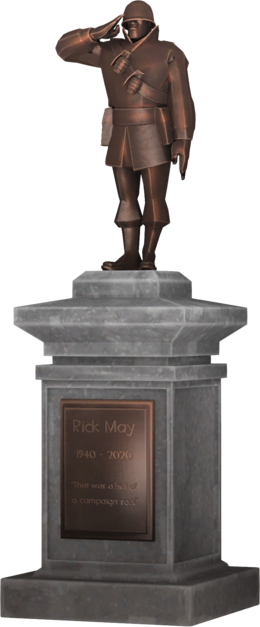

So, what is so special about rocket jumping? There are plenty of games that have their own fun movement techniques, like Super Mario 64's infamous backwards long jump, a glitch that revolutionized SM64 speedrunning. Not to mention, Soldier is not the only class in TF2 that has an explosive jump: Demoman can sticky jump by trying a similar procedure with his sticky bombs, and the Engineer can pull off a sentry jump through the use of the Wrangler to either use the sentry's rockets for his own rocket jump or continuously shoot himself as he is jumping to propel himself into the air (note that this bullet jumping is much harder and more likely to kill the Engineer for trying). Yet in spite of all of these alternative methods for cool movement, rocket jumping remains unique for so many reasons, and there has been nothing quite like it even after 17 years.

It's simplicity allows it to be easy to pick up, while also being hard to completely master, as well as make the technique easily applicable to many situations. Soldiers can go incredibly high, cover huge distances at high speeds, or even increase air time or speed just by changing where they choose to shoot, and each action has its own use. Sticky jumping isn't quite as versatile as a result of how much more complex it is. Demoman has to wait 0.7 seconds before he can actually detonate his sticky bomb, has to guess where he will go beforehand and shoot a sticky into the air in advance if he wants to jump again in the air, and make sure he doesn't die from it (stickies deal much more self-damage than rockets). Whereas rocket jumping can lead to a bunch of interactions, sticky jumping is a bit less versatile and can be very predictable, and is a less used mechanic as a result.
It's balanced by being high-risk, high-reward. If you aren't using the Gunboats, a secondary that heavily decreases the amount of self-damage rockets do, it only takes 5 rockets before a Soldier takes himself out. With rocket jumping, this makes each jump act like a limited resource, causing the Soldier to be more careful and evaluate whether or not they should rocket jump, and ultimately makes the moments where they did choose to do it and it worked out that much more thrilling and satisfying. Even the Gunboats has its own flaws, that being you lose out on the benefits of your other secondaries. Having the Gunboats equipped means you don't have one of the shotguns for a safer option in close combat or the banners for team buffing capabilities. Additionally, the extra reliance on rockets that comes with the Gunboats also makes you more vulnerable to Pyros, who can deflect your rockets, which changes ownership of them to the Pyro, meaning the rocket no longer registers as self-damage when it hits you. Deflecting the rocket also makes it register as a mini-crit (damage is multiplied by 1.35), so if the Gunboats Soldier isn't unpredictable enough, they are an easy picking for the Pyro. This makes Rocket Jumping a high risk, high reward option, which is good game design because players should naturally be awarded more if they take a higher risk.
It has a huge impact on Soldier's matchups against the other classes. A Soldier that isn't good at rocket jumping is much worse than a Soldier that can, even if the latter isn't as good. This is because they are unable to catch up to faster classes like Scout and can only dream of ambushing the vital classes like Demoman, Medic, and Sniper. As stated before, a Soldier that equipped the Gunboats for safer rocket jumps forces more careful play around Pyros, since switching to a shotgun is no longer an option.
It's simply incredibly fun. Although new players often look like this this when they try it out for the first time, it's very satisfying once you get it down. It's incredibly fun sending a particularly annoying Sniper to the shadow realm with a shovel, catching a team off guard and taking their Medic out before they can react, and just discovering all of the cool jumps you can use for each map. Some of the most prevalent kinds of community servers revolve around teaching people the different rocket jumping techniques or testing how fast they can clear courses with it, a testament to the popularoty of this mechanic.